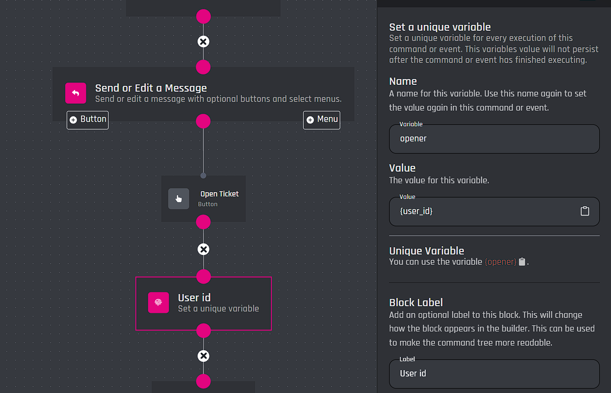
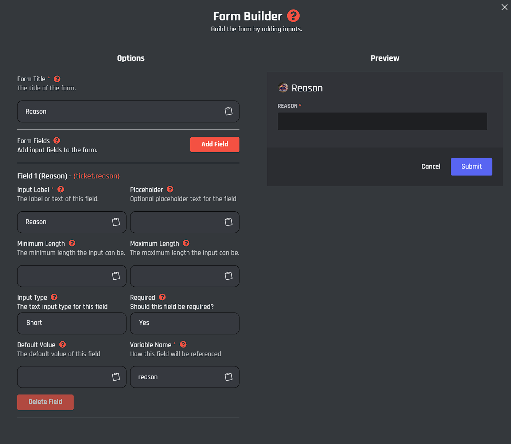
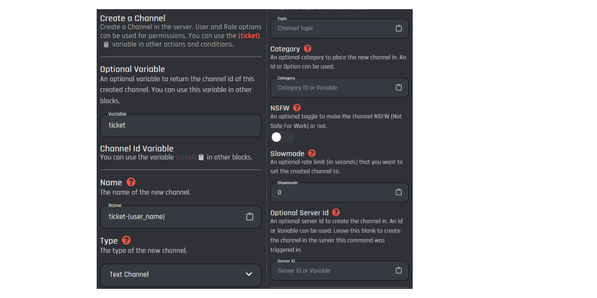
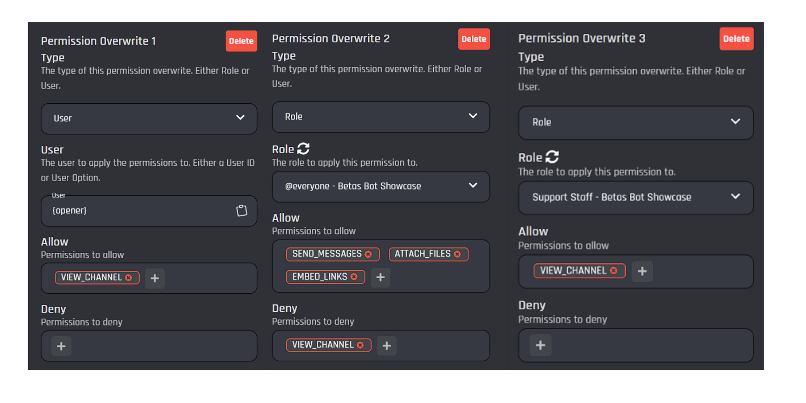

Advanced Tickets
1. Make a command, enter the name and description.
2. Add a `Send or edit a channel` block. Enter the message builder. This will be our Ticket Panel.
The Panel should describe what tickets are and what each topic does.
Here's an example of what the Ticket Panel might look like:
Welcome to our ticket system! Please select the appropriate option below to create a ticket.
- General Support: For questions or issues not covered by the other categories.
- Billing Inquiries: For questions about your subscription or payments.
- Report a User: To report harassment, abuse, or other violations of our community guidelines.
3. Add a button, each button will be responsible for opening a ticket. Make sure to set `Show Button Replies` to `Hide replies`.
4. Add an `Set a unique variable` block. As the name you can choose what you want, we will be using `{opener}`and set the value to `{user_id}` This will save the ticket opener for later use.

5. Add a `Send a form` block, the form name can be whatever you want. The form will be used for the opener to
describe their issue.
You can build your form however you want, However make sure you stay in these
guidelines otherwise your form won't work.
- A Form can have a total of 5 Fields.
- A Form's title has a maximum length of 45 characters.
- The text input label has a maximum length of 45 characters.
- The placeholder is limited to 100 characters.
- A variable name is required for your form to function.

6. Add a `Create a channel` block.
7. Set an optional variable, you can choose what variable you want, we will use {ticket}. (This variable will return the channel ID of the created channel.)
8. Set a name for the channel. Remember to stay within channel guidelines. No special symbols. For this example we will name our tickets `ticket-{user_name}`
9. Set the channel type to `Text Channel` a topic is not required.
10. Set the category, this is the place where all tickets will arrive. If no category is entered, the tickets will appear outside a category at the top of the channel list.
11. NSFW, Slow mode and Server ID are all optional and can be ignored.

12. Scroll down to the permission section and switch the first permission to `User` and in the field that
appears paste the unique variable ({opener}). Then give the `VIEW_CHANNEL`.
The second permission will be
for our @ everyone role. Give this role the `SEND_MESSAGES, ATTACH_FILES` `EMBED_LINKS`.
And deny the
`VIEW_CHANNEL` permission. Our last Permission will be for our staff, give them the `VIEW_CHANNEL` Permission.
If the channel isn't creating, check:
- Channel name: No special characters
- Permissions: Valid role/variable
- Category: Valid id/category
- Bot role: Bot has admin and bot role is above any role in the permission field.
- Bot: Make sure the bot is online
- Check error logs for anything.

13. Add a `Send or edit a message` block, this will be used to notify the opener that the channel was created.
Example:
Your ticket has been created! Please go to your ticket channel.
14. Add another `Send or edit a message` block, this will be similar to a panel. (You can use the variable from the form to retrieve the reason for opening the ticket)
15. Change the `Response type` in the panel made in step 14. And change the type to `Send the message to a specific channel`and enter your channel variable from step 7 ({ticket}).

16. Add a button for closing the ticket.
17. Add a `Delete a channel` block and select `Channel ID or Variable` and place the variable from step 7 ({ticket}).

This Ticket system can be expanded with:
- Claiming tickets
- Logging
- Transcripts
- Multiple ticket types (billing, management, report etc...)
- Close request
- Rename